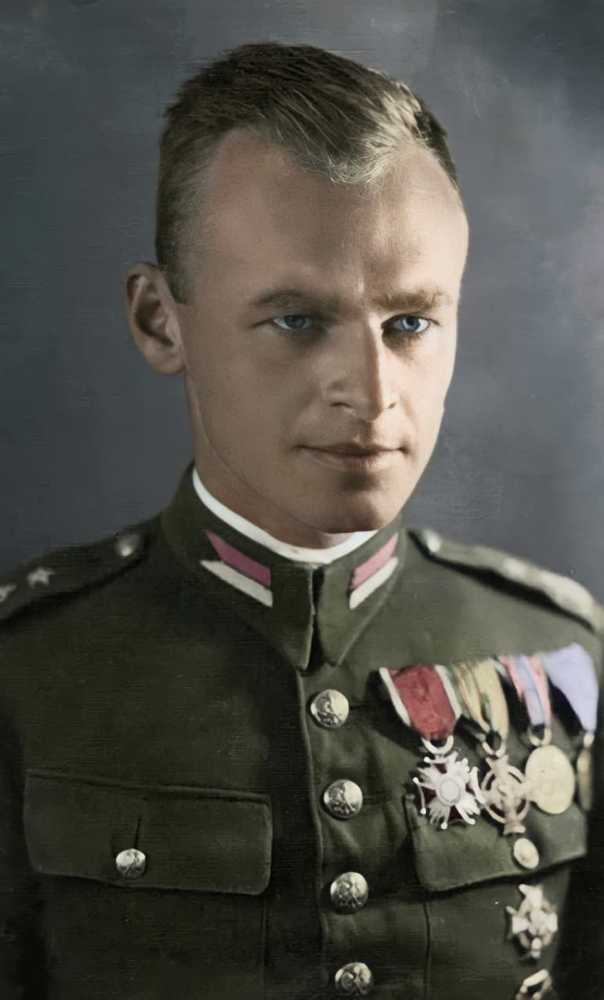
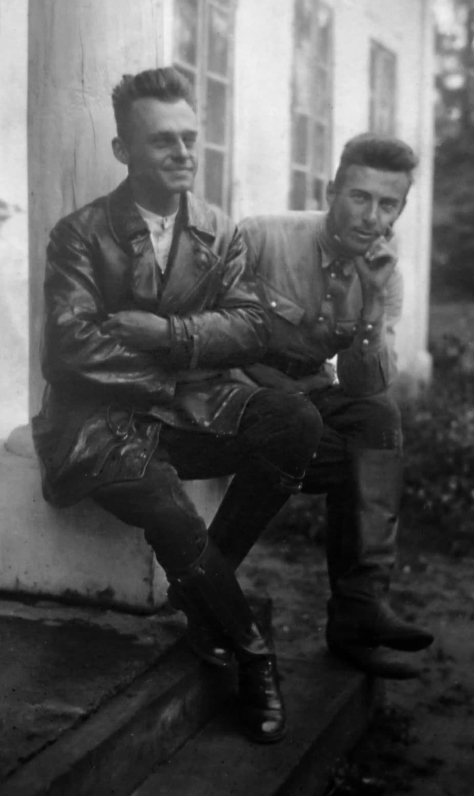
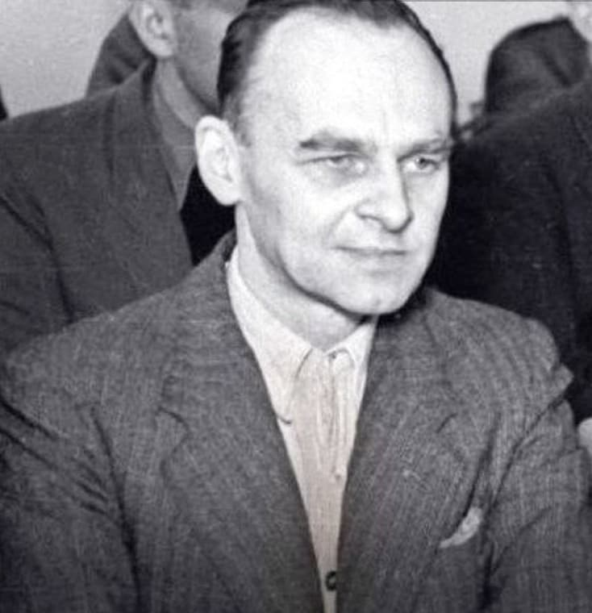

Witold Pilecki (1901–1948) est l’une des figures les plus extraordinaires de la Seconde Guerre mondiale. Officier de cavalerie, patriote, résistant, il est le seul homme à s’être infiltré volontairement dans Auschwitz pour témoigner des crimes nazis.
Son parcours incarne le courage absolu : combattre l’occupant nazi, survivre aux camps, s’évader, reprendre les armes, puis affronter le régime communiste qui l’exécutera en 1948.
Né en 1901 dans une Pologne occupée par la Russie, Pilecki grandit dans un environnement marqué par la lutte pour l’indépendance. Très jeune, il rejoint des organisations patriotiques clandestines et participe à la guerre polono-soviétique (1919–1921).
Officier de cavalerie dans l’armée polonaise, Pilecki est reconnu pour sa discipline, son intelligence et son sens du devoir. Durant l’entre-deux-guerres, il devient une figure respectée de son unité.

Après l’invasion de la Pologne en 1939, Pilecki rejoint la résistance (Armia Krajowa). Il participe à la création d’unités clandestines et mène des opérations contre l’occupant.
C’est dans ce cadre qu’il propose une mission unique dans l’histoire : se faire arrêter volontairement pour infiltrer Auschwitz.

En 1943, après près de trois ans dans Auschwitz, Pilecki s’évade. Il rejoint la résistance, participe à l’insurrection de Varsovie et continue le combat jusqu’à la fin de la guerre.
En 1947, le régime communiste polonais l’arrête, l’accuse d’espionnage, le torture et l’exécute en 1948. Son corps n’a jamais été retrouvé.

Des décennies plus tard, Pilecki est réhabilité et reconnu comme l’un des plus grands héros de la Pologne moderne. Son histoire est aujourd’hui étudiée dans les musées, les ouvrages historiques et les centres de mémoire.